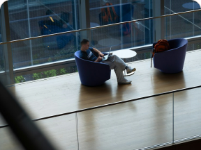

01
The Path Ahead
Every journey starts with an open road and a question worth asking.
Find your next opportunity
Opportunity Compass helps University of South Carolina students discover internships and research experiences that match their interests, goals, and academic journey.
Explore by pathway
Browse curated starting points, then use the interest form for guidance tailored to you.
Your journey
Every journey starts with an open road and a question worth asking.

Curiosity becomes knowledge through research and meaningful experience.
An internship or research position is where preparation meets opportunity.
A question becomes a credential and a clearer next step.
Our purpose
Opportunity Compass makes student pathways easier to see and compare. It brings high-value resources into one place and helps students take a confident first step.